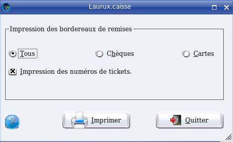
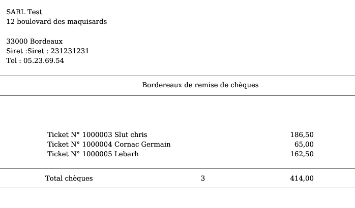

~ Laurux.Pos ~

~ Laurux.Pos ~ |
|
|
|
Impressions des bordereaux de cartes et de chèques.
Le soir, après les déconnexions des caisses il est
possible d'imprimer des bordereaux de remises de cartes et de chèques. Le menu est accessible par l'option "Impression des bordereaux" dans l'option "Opérations de fin de journée" du menu "Caisse",

L'écran offre la possibilité d'imprimer les deux types de bordereaux ou un seul.
Il est également possible de faire apparaitre le numéro du ticket devant chaque réglement.

En fin de page on aura le nombre de chèques ainsi que le montant total du dépot.
----------------------------------------------------------------------------------------------------------------------